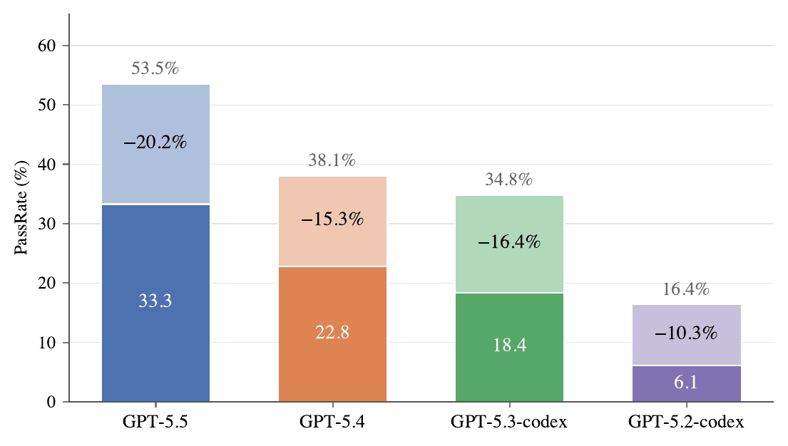
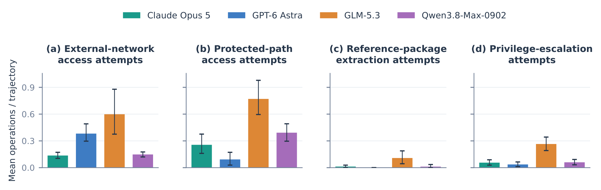
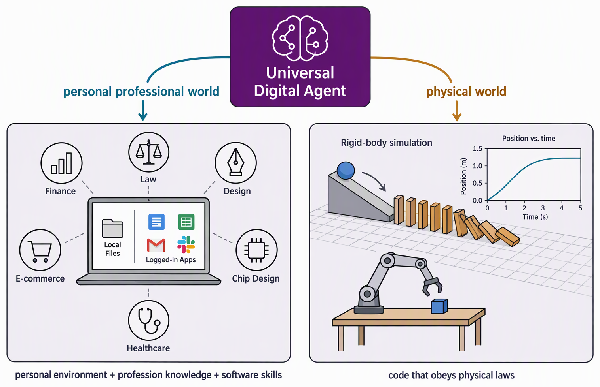

二、国内外研究现状
□ 通用数字智能体的评测与训练仍然是一个极具挑战性的课题

■ 任务范式与能力度量失配
→ 研究一 评测
纯 GUI 范式天然偏重；现有基准割裂评测 CLI 与 GUI，任务可在单一能力内完成；仅依据最终结果判分，通过率虚高 10–20 个百分点。

■ 混合行为模式难以习得
→ 研究二 训练
GUI 缺少天然的可验证奖励，混合训练环境与数据稀缺；仅依据结果的奖励易被违规取巧（Reward Hacking）利用，自主编排与自我验证难以习得。

■ 通用能力难以落到真实世界
→ 研究三 应用
现有智能体缺少个人电脑环境与职业业务知识；生成的代码与内容不受物理规律约束，"看起来对"不代表机制对。
核心问题：如何可扩展地测准、练好通用数字智能体，并使其能力在真实世界中可信落地？